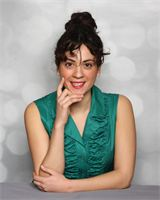

About
Christine Genna M.S. CCC-SLP, TSSLD
Christine Genna, founder of Brooklyn's Speech Garden, is a state and nationally certified speech language pathologist. She holds a Certificate of Clinical Competence (CCC) from the American Speech-Language Hearing Association (ASHA), and she is certified as a Teacher of Students with Speech and Language Disabilities (TSSLD). Christine earned her M.S. in Communication Sciences and Disorders at The College of Saint Rose in Albany, New York and her B.A. in Communication Sciences and Disorders from The State University of New York (SUNY) at New Paltz. She has conducted research on the positive effects of mindfulness meditation on therapy efficacy; and employs a mind-body approach when treating the whole child. Additionally, Christine has pursued post-graduate education in training parents of children with language delays. She recognizes the importance of involving parents in their child’s early language intervention, and enjoys empowering caregivers through teaching practical and powerful language facilitation strategies to help children communicate during every day routines. Christine is an advocate for early identification and treatment of speech and language delays, because she knows this fosters later social and academic success!
Christine provides both assessment and treatment for children with autism spectrum disorders, as well as children exhibiting developmental delays and various other communication disorders (i.e., expressive and receptive language delays, pragmatic language delays, and speech/phonological delays). Christine leads the workshop It Takes Two to Talk – The Hanen Program® for parents of children with language delays in Brooklyn and Manhattan. She has worked in a variety of settings including home and community based, preschool, elementary, middle and high schools, and private practice clinics. Christine has worked in general education, special education and integrated schools; and incorporates curriculum related material into therapy sessions. She enjoys working with families to provide evidence-based practice in a supportive learning environment which targets each individual child’s learning style. She believes this collaboration is the key to generalization of skills learned within therapy.